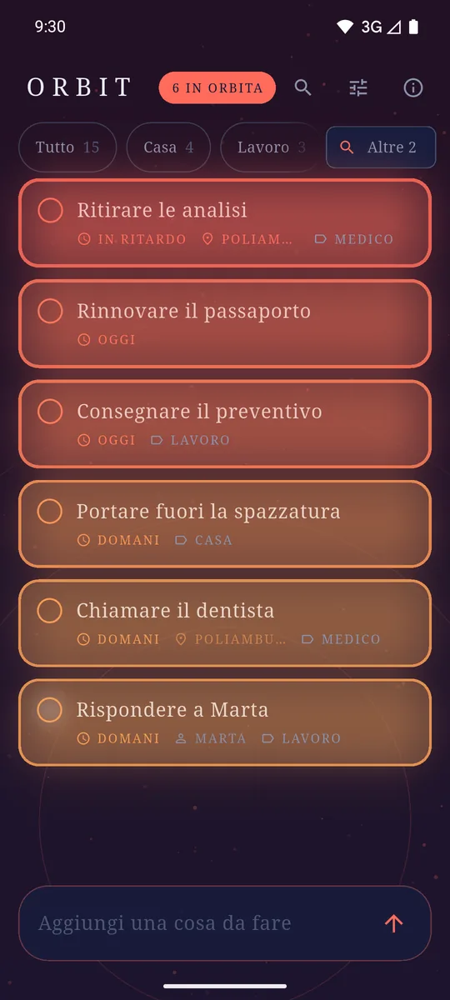
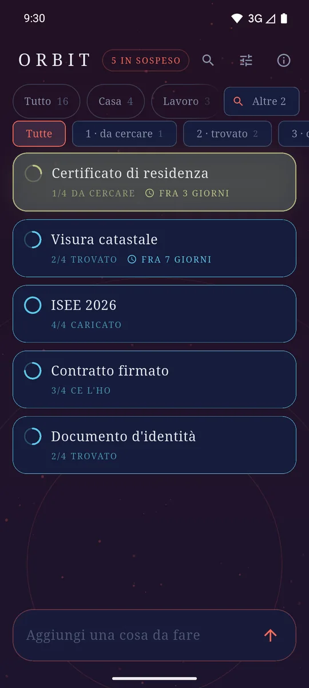
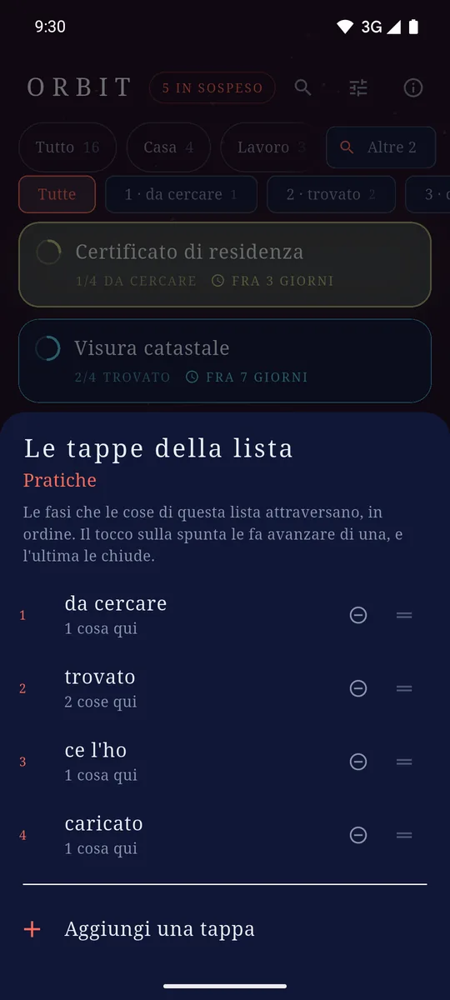
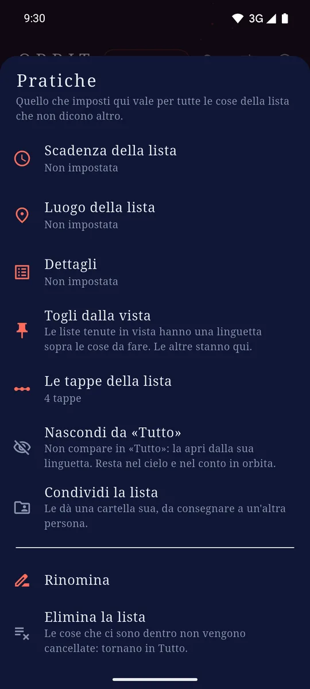
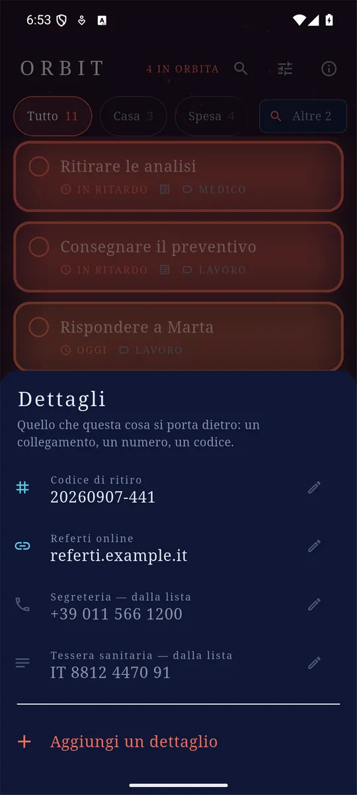
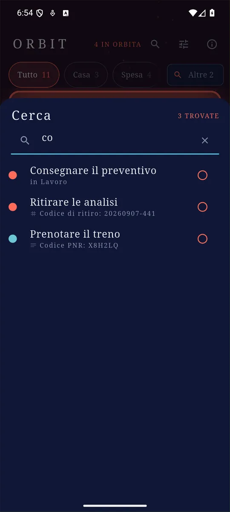

ItalianoEnglish
Dai a una voce una scadenza o un luogo, e da lì in avanti si muove da sola: scalda, il bordo si ispessisce, sale verso l'alto della lista man mano che il giorno o il posto si avvicinano. Il cielo dietro la lista cambia con lei. Non c'è niente da ordinare a mano: in cima c'è quello che preme di più.
Quello che spunti sparisce dalla lista invece di accumularsi sotto. Quello che non vuoi vedere adesso — la spesa, mentre lavori — si tiene da parte senza smettere di avvisarti. E per le cose che non si fanno in un colpo solo, una lista può avere le sue tappe: da cercare, trovato, ce l'ho, caricato.

In cima c’è quello che preme di più. Il colore è la scadenza, non un’etichetta. 
Tocca il numero in alto e resta solo quello che sta arrivando, da tutte le liste. 
Fra «da fare» e «fatto», le tappe di una lista. L'anello dice a che punto sei. 
Le tappe le scrivi tu, in ordine. Il tocco sulla spunta fa avanzare di una. 
Quello che una lista decide per tutto ciò che contiene — tappe comprese. 
Quello che una voce si porta dietro. Le ultime due gliele presta la lista. 
Cerca in tutte le liste insieme, e dice perché ogni cosa è lì. 
Una lista per cosa, e le due o tre che usi restano in vista. 
Condividere è dare alla lista una cartella, e consegnarla tu: nessun account. 
Data, luogo e lista di una voce: un tocco lungo e c’è tutto. 
Il campo per aggiungere è in fondo, dove sta già il pollice.
Cosa fa
- Si apre già pronta. Il campo per aggiungere è sotto il pollice: niente account, niente registrazione, niente schermate di benvenuto.
- Scadenze che si sentono. Una data non è un'etichetta, è un valore che si muove — e l'ultimo giorno pesa più dei primi sei messi insieme.
- Luoghi. Una voce può appartenere a un posto: mentre l'app è aperta pesa di più man mano che gli sei vicino, e sale. Orbit non insegue la tua posizione.
- Più liste, con una scadenza e un luogo che valgono per tutto quello che c'è dentro: «Spesa» sa dov'è il supermercato una volta invece di venti.
- Dettagli. Una voce può portarsi dietro un collegamento, un numero di telefono, un'e-mail, un codice. Un tocco apre, chiama, copia.
- Tappe, per le liste che ne hanno bisogno. Fra «da fare» e «fatto» una lista può mettere le sue fasi, in ordine: da cercare, trovato, ce l'ho, caricato. Il tocco sulla spunta fa avanzare di una e l'ultima chiude, quindi il gesto resta uno solo. Una striscia filtra per tappa. Rinominarne una non tocca niente, e cancellarne una non sposta di nascosto quello che c'era dentro.
- Due viste, un tocco per passare. La lista è dove sono archiviate le cose; l'orbita è cosa sta arrivando. Il numero in alto è il passaggio fra le due.
- Una lista può stare fuori da «Tutto». La spesa non è una cosa da leggere mentre lavori. Quello che nascondi continua a pesare nel cielo e nei promemoria: è una scelta su cosa leggere, non su cosa sapere.
- Le cose fatte escono dalla lista, e una riga in fondo dice quante sono: un tocco e tornano.
- La ricerca guarda ovunque: in tutte le liste insieme, nei titoli e nei dettagli.
- Promemoria alla data che hai messo, e widget per la schermata iniziale — uno per lista, ognuno con il suo +.
- Aggiunta rapida dalla tendina: si scrive e la voce è nella lista, senza aprire l'app.
- In italiano e in inglese, secondo la lingua del telefono.
Quello che una cosa si porta dietro
Il codice del pacco, il numero dell'officina, il link alla prenotazione: finivano tutti dentro al titolo, perché non c'era altro posto. Ora sono dettagli — un nome che scegli tu e un tipo, fra testo, collegamento, e-mail, telefono e numero. Il tipo cambia tre cose: la tastiera con cui lo scrivi, l'icona con cui lo vedi e cosa fa un tocco — apre il collegamento, chiama il numero, copia il testo.
Quello che scrivi però resta testo, sempre. Un numero di telefono non è un numero, e un campo che pretendesse di convalidarlo sarebbe un campo che ogni tanto ti rifiuta quello che hai scritto davvero.
Anche le liste hanno i loro, prestati a tutto quello che contengono: «Spesa» sa il telefono del negozio una volta invece di venti. Vale la stessa regola della scadenza — quello che scrivi sulla singola voce vince.
Le cose che non si fanno in un colpo solo
Certe cose non sono «da fare» o «fatte»: sono a metà. Il certificato lo devi prima trovare, poi ritirare, poi caricare — e finché non è caricato non è fatto, ma non è nemmeno più da cercare. Una lista può quindi avere le sue tappe, scritte da te e in ordine, e tutto quello che c'è dentro sta su una di quelle.
Il gesto resta uno: il tocco sulla spunta fa avanzare di una tappa, e l'ultima chiude la cosa. L'anello attorno alla spunta si riempie man mano, così a che punto sei si legge di sfuggita, senza aprire niente. Una striscia di linguette filtra per tappa — «fammi vedere tutto quello che è ancora da ritirare» — e le liste che di tappe non ne hanno restano esattamente come sono: una cosa è da fare, o è fatta.
Le tappe si possono rinominare senza toccare niente di quello che c'è dentro, e riordinare senza spostare nessuno: ogni voce si ricorda quale tappa, non la posizione. Se una tappa la cancelli, il foglio ti dice prima quante cose ci stanno sopra.
Due viste, un tocco per passare
Una lista è dove sono archiviate le cose; l'orbita è cosa sta arrivando. Sono due domande diverse e ora hanno due risposte diverse: il numero in alto — «6 in orbita» — si tocca, e restano solo le voci che si stanno avvicinando, attraverso tutte le liste, comprese quelle che hai messo da parte. Un altro tocco, o una linguetta, e torni alla lista.
Perché è lì che una lista messa da parte torna a farsi sentire: nasconderla è una scelta su cosa leggere, mai su cosa sapere. Quello che ci sta dentro continua a contare nel cielo, nel numero in alto e nei promemoria — una lista che smettesse di avvisare sarebbe una lista cancellata con un altro nome.
E quando non ti ricordi dove l'avevi messa
La lista si ordina da sola per urgenza: perfetto la mattina, inutile quando cerchi la cosa scritta tre settimane fa. La lente in cima cerca in tutte le liste insieme — nei titoli, nei nomi delle liste e nei dettagli — perché chi cerca ha già ammesso di non sapere dove sia la cosa, e una ricerca che desse retta alla linguetta in cima risponderebbe «niente» con la voce a una lista di distanza. Ogni risultato dice perché è lì, e da lì si spunta senza uscire.
Una lista si può condividere
Condividere una lista, in Orbit, vuol dire una cosa sola: quella lista prende una cartella tutta sua, e sei tu a consegnarla — con Syncthing, Mega, Drive o quello che già usi. Non c'è un invito da mandare, non c'è un codice, non c'è un server nostro in mezzo: chi riceve la cartella la apre con Orbit e siete sulla stessa lista. Quello che l'altra persona ha appena toccato arriva acceso e si spegne nel giro di ore.
Il prezzo è scritto nell'app prima del tocco, e vale la pena ripeterlo qui: i file di una lista condivisa escono dal telefono in chiaro, per mano del servizio che hai scelto tu.
I tuoi dati restano tuoi
Quello che scrivi è salvato come file sul telefono, uno per voce. Non esiste un server di Orbit e non c'è nessun account: niente di quello che scrivi viene inviato a noi. Se tieni quella cartella dentro un servizio di sincronizzazione che usi già, è quel servizio a copiarla fra i tuoi dispositivi — e il formato è fatto apposta perché due telefoni scollegati non si rovinino i dati a vicenda.
Come si paga
Con un banner ancorato in fondo, e basta: nessun annuncio dentro la lista, nessun abbonamento, nessuna funzione tenuta in ostaggio.
Dove trovarla
Non è ancora su Google Play. Quando ci sarà, il collegamento comparirà qui.